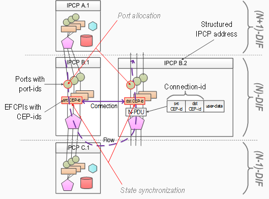

Welcome to the official RINASim web page
Recursive InterNetwork Architecture (RINA) as the new (and complete) clean-slate architecture (outlined in the book by prof. John Day) tries to touch and codify every part of communication within computer networks. Therefore, RINA’s knowledge base spans from high-level reference model description to low-level characterization of each component functionality. Pouzin Society is a formal body in charge of maintaining specifications with Faculty of Information Technology at Brno University of Technology as one of its members (and also a core developer of RINASim).
RINASim is a stand-alone framework for OMNeT++ discrete event simulator environment. RINASim is coded from scratch and independent on another library. The main purpose is to offer the community with reliable and the most up-to-date tool (in the sense of RINA specification compliance) for simulating RINA-based computer networks. RINASim at its current state represents an entirely working implementation of the simulation environment for RINA. The simulator contains all mechanisms of RINA according to the current specification. The main goals of RINASim are to allow:
- researchers to prototype and test new policies and mechanisms in native and full-compliant RINA environment - scientific goal;
- others to visualize and understand RINA principles - educational goal.
RINASim started as one of FP7 EU PRISTINE deliverables and continues beyond the end of the project. RINASim is the open environment that can be extended with experimental features. The simulator helps to evaluate new features and to compare them with existing methods. We encourage anyone interested in RINA to step in and contribute.
Installation
RINASim is developed in OMNeT 5.0 and February2017 is the most up-to-date release. August2016's release is the last one compatible with OMNeT++ 4.6. The current trend is to make RINASim operatable on any OMNeT versions that support C++11 language standard and GCC 4.9.2 compiler (which includes also OMNeT++ 5.1). All source codes (including master and other thematic branches) are publicly available on the project’s GitHub repository. Apart from this official channel for source codes, RINASim stable release snapshots are periodically published on Open Source Project repository
In order to make RINASim more available for general public, we have prepared a virtual machine with preinstalled OMNeT++ 4.6 containing always stable and the most current version of RINASim. Out-of-the-box virtual machine is generic OVA appliance, which should be compatible with widely used virtualization softwares (so far tested in VMWare Workstation and ESXi solutions).
Manual installating and building RINASim from the source code is pretty simple. Follow these steps:
- Just clone or download the main branch.
- Import the project into OMNeT++ (it is named
rina). - Compile the project, which creates one static library (
librinasimcorecontaining simulation core) and one dynamic library (librinasimalso containing various policies linked together with core). - Play with RINASim. Check the source codes in
/srcand/policiesfolders. Run fingerprinted scenarios and demonstrations in/examplesfolder or check work-in-progress in/playgroundfolder.
Authors
All contributing members with their affiliations summarized at one place:
- Vladimír Veselý (@kvetak) - Brno University of Technology (CZ)
- Marcel Marek (@screw) - Brno University of Technology (CZ) + University of Oslo (NO)
- Kamil Jeřábek (@kjerabek) - Brno University of Technology (CZ)
- Tomáš Hykel (@thykel) - Brno University of Technology (CZ)
- Sergio Leon Gaixas (@gaixas1) - Universitat Politècnica de Catalunya (ES)
- Peyman Teymoori (@peyman-t) - University of Oslo (NO)
- Ehsan Elahi (@ehsanzahoor) - TSSG in the Waterford Institute of Technology (IE)
- Kewin Rausch (@kewinrausch) - CREATE-NET (IT)
- Fatma Hrizi (@fatmahrizi) - Telecom SudParis (FR)
- Kleber Leal (@fatmahrizi) - Universidade Federal de Pernambuco (BR)
The easiest way how to reach developers is to join dedicated Skype group. The more passive option is to subscribe yourself to the official mailing-list.
Open Call for Collaboration
Dear all RINA enthusiasts!
RINASim is currently (28th February 2017) the most advanced framework for discrete event simulation of native RINA networks. We would like to preserve this status and continue extending RINASim features with your help. Hence, we are looking for new collaborators willing to participate on RINASim development.
If you are the researcher and/or student with at least one of the following traits then you are the perfect match for this job:
- general interest in RINA;
- basic knowledge of C/C++;
- ability to decompose problems to finite-state machines;
- systematic approach to troubleshooting.
Developer’s work is an ongoing process. Hence, here is the task list of the most eminent problems which we would like to address shortly (in Q2/Q3 of 2017).
Task 1: Teaching RINASim materials for newbies
The learning curve for RINASim is pretty steep right now. We would love to make RINASim more user-friendly for newcomers and help them with their initial steps.
We are intentionally looking for somebody, who does not have a lot of experience with coding. We need entry level material for a new RINASim user that will explain: 1) the meaning of various RINASim components (FA, RMT, DA, EFCP, RA); 2) scenario setup using config.xml and omnetpp.ini files; 3) annotate basic scenarios in folder /examples/Demos. All created materials will be publicly available on this web page.
Task 2: Real data-link layer simulation modules
The first step on the long road to compare RINA with classical TCP/IP stack is to support realistic data-link layer simulation models within RINASim.
This task is suitable for anyone with previous coding experience with OMNeT++ and/or NS2/3 tools. The goal is to migrate available Ethernet and PPP interface models from the INET framework into RINASim. It is expected that you will alter high-level RINASim nodes and bridge the gap between the medium link and the bottommost IPC processes.
Task 3: Unifying naming and addressing
The current RINASim uses strings with fixed syntax (address_dif/daf-name) for AP and IPCP names. Nevertheless, RINA addressing theory is so flexible that it supports: 1) both flat and hierarchical spaces; 2) neat addressing tricks like synonyms and whatevercast names.
This is a bigger task that contains independent subtasks. Fulfillin just a single subtask would be a great achievment:
- DIF Allocator is being bothered whenever name/address resolution is needed. Specifications are speaking about NameSpace Manager component, which contains a resolution cache. Your goal would be to implement this cache.
- Extend the functionality of core classes (e.g., in folder
/src/Commonclasses like APN, APNamingInfo, Address) related to addressing and naming. The update should offer programmable syntax and semantics of Address class. - DIF Allocator changes are needed to fully-compliant support of whatevercast names and synonyms. You should refactorize DA component and create relevant scenarios demonstrating a new functionality.
Task 4: Doxygen documentation
Any good framework needs a strong coding documentation. RINASim is using Doxygen but not everything is well-documented (thanks to the laziness of original authors ʘ‿ʘ).
This task is for anyone curious about how RINA works. Your job would be to compare behavior described in the specification and observed in RINASim. Basically, you can pick any RINASim component that interests you, execute related scenarios and append Doxygen documentation to the parts of source code that are missing it.
Task 5: Hardware-in-the-loop (HWIL) simulation
Since OMNeT++ is based on C/C++, it offers communication with your network interface card (NIC) by leveraging libpcap library. INET framework supports an external interface which allows you to connect your simulation module with the real network. Your simulated router can exchange data with the real network devices.
Your task would be to integrate relevant external interface modules from INET framework and bind them with libpcap library. Beaware, it is not a job for a networking and coding newbie. Following next, you will create a new RINA nodes which will bridge their connection to medium directly to your NIC. As the last step, you will create a simple scenario with two RINASim nodes working in the HWIL.
References
Here is the growing list of papers and publications citing RINASim as employed tool:
- VESELÝ, Vladimír. A NEW DAWN OF NAMING, ADDRESSING AND ROUTING ON THE INTERNET. Brno, 2016. Available from: http://www.fit.vutbr.cz/study/DP/PD.php?id=515. PhD. Thesis. Brno University of Technology, Faculty of Information Technology. 2016-04-12. Supervisor Švéda Miroslav.
- S. L. Gaixas, J. Perelló, D. Careglio, E. Grasa, N. Davies and P. Thompson. Assuring Absolute QoS Guarantees for Heterogeneous Services in RINA Networks with ΔQ. IEEE NetCloud 2016, December 2016.
- E. Elahi, J. Barron, M. Crotty, M. Ponce de Leon, R. Mijumbi, S. Davy, D. Staessens and S. Vrijders. On Load Management in Service Oriented Networks. IEEE Cloudnet 2016, October 2016.
- P. Teymoori et al., Congestion control in the recursive InterNetworking Architecture (RINA), 2016 IEEE International Conference on Communications (ICC), Kuala Lumpur, 2016, pp. 1-7. doi: 10.1109/ICC.2016.7510818. Available from: http://ieeexplore.ieee.org/stamp/stamp.jsp?tp=&arnumber=7510818&isnumber=7510595
- F. Hrizi, A. Laouiti and H. Chaouchi, SFR: Scalable forwarding with RINA for distributed clouds, Network of the Future (NOF), 2015 6th International Conference on the, Montreal, QC, 2015, pp. 1-6. doi: 10.1109/NOF.2015.7333311. Available from: http://ieeexplore.ieee.org/stamp/stamp.jsp?tp=&arnumber=7333311&isnumber=7333276
- VESELÝ Vladimír, MAREK Marcel, HYKEL Tomáš, RYŠAVÝ Ondřej, LICHTNER Ondrej and JEŘÁBEK Kamil. Deliverable 2.6: RINASim - advanced functionality. Brno, 2015. Available from: http://ict-pristine.eu/wp-content/uploads/2013/12/pristine-d26-rina_sim-draft.pdf.
- VESELÝ Vladimír, MAREK Marcel, HYKEL Tomáš and RYŠAVÝ Ondřej. Skip This Paper - RINASim: Your Recursive InterNetwork Architecture Simulator. In: Proceedings of 2nd OMNeT++ Community Summit. Ithaca, NY: Cornell University Library, 2015, pp. 1-4. ISSN 2331-8422. Available from: https://arxiv.org/abs/1509.03550
- VESELÝ Vladimír, MAREK Marcel, HYKEL Tomáš, RYŠAVÝ Ondřej and LICHTNER Ondrej. Deliverable 2.4: RINASim - basic functionality. Brno, 2015. Available from: http://ict-pristine.eu/wp-content/uploads/2013/12/pristine-d24-rinasim-v1_0.pdf
Resources
In order to make navigation easier, we are providing you with a few tips where things are and what kind of policies are implemented.
Webinars
Embedded introductory presentations about RINASim are just below. They contain the most up-to-date summary of RINASim design, implementation and behavior.
Directory structure
The project is spread in following folders.
/playground... unsupported/obsolete scenarios/examples... scenarios testing RINA stack/Basics... simple testing/Congestion... congestion control/Demos... use-cases for tutorials and demo sessions/LB... load-balancing/Routing... routing in various topologies
/policies... all programable RINA policies/src... core source codes' folder/Common... shared basic classes/CS... computing system simulation nodes/DAF... DAF components/DIF... DIF component/Other... non-essential user-requested core components
/scripts... various scripts supporting developmentfingerprints.sh... batch for checking/updating fingerprintsslocstats.sh... counts source lines of code
Available policies
RINA itself is based on the idea of separating mechanisms and policies. There is a limited number of mechanisms but possible infinity ways how to conduct them via programable policies. Here is ever expanding list of available RINASim policies:

Each policy varies in its implementation and the subsequent impact on packet processing, management functionality and other aspects of RINA stack functionality. Generally, if you want more details, you need to dive deep into specification and source code :-)
Theory
The purpose of this section is to provide future RINASim user with a short introduction to RINA concepts (or more accurately executive summary). These concepts and ideas formulate the design and development of the whole RINASim.
Nature of applications and application protocols
Is application a part of IPC environment or not? The set of Internet applications was rather simplistic before WWW – one application with a single instance using only one protocol. Hence, there is nearly no distinction between an application and its networking part. However, the web completely changed this situation – one application protocol may be used by more than one application and also one application may have many application protocols.
Following terms are recognized in the frame of RINA, and their relationship is depicted in below:
- Application Process (AP) – Program instantiation to accomplish some purpose;
- Application Entity (AE) – AE is the part of AP, which represents application protocol and application aspects concerned with communication.
There may be multiple instances of the Application Process in the same system. AP may have multiple AEs, each one may process different application protocol. There also may be more than one instance of each AE type within a single AP.
All application protocols are stateless; the state is and should be maintained in the application. Thus, all application protocols modify shared state external to the protocol itself on various objects (e.g. data, file, HW peripherals). Because of that, there is only one application protocol that contains trivial operations (e.g., read/write, start/stop). Data transfer protocols modify state internal to the protocol, the only external effect is the delivery of SDUs.
Core terms
The data transport and internetworking tasks together (generally known as networking) constitute inter-process communication (IPC). IPC between two APs on the same operating system needs to locate processes, evaluate permission, pass data, schedule tasks and manage memory. IPC between two APs on different systems works similarly plus adding functionality to overcome the lack of shared memory.
In traditional networking stack, the layer provides a service to the layer immediately above it. As RINA name suggests, recursion and repeating of patterns is the main feature of the whole architecture. Layer recursion became more popular even in TCP/IP with technologies like Virtual Private Networks (VPNs) or overlay networks (e.g., OTV). Recursion is a natural thing whenever we need to affect the scope of communicating parties. However, so far it was just recursion of repeating functions in existing layers. RINA is based on following core ideas:
- “Networking is interprocess communication…and IPC only!”
- “Application Processes communicate via a service provided by a distributed application that provides IPC. The application processes that make up this Distributed IPC Facility provide a protocol that implements an IPC mechanism, and a protocol for managing distributed IPC (routing, security and other management tasks)!”
In ISO/OSI or TCP/IP, there is a set of layers each with completely different functions. RINA on the other hand yields idea of the single generic layer with fixed mechanisms but configurable policies. This layer is in RINA called Distributed IPC Facility (DIF) – a set of cooperating APs providing IPC. There is not a fixed number of DIFs in RINA; we can stack them according to application or network needs. From the DIF point of view actual stack depth is irrelevant, DIF must know only (N+1)-layer above and (N-1)-layer below. DIF stacking partitions network into smaller, thus, more manageable parts.
The concept of RINA layer could be further generalized to Distributed Application Facility (DAF) – a set of cooperating APs in one or more computing systems, which exchange information using IPC and maintain shared state. A DIF is a DAF that does only IPC. Distributed Application Process (DAP) is a member of a DAF. IPC Process (IPCP) is special AP within DIF delivering inter-process communication. IPCP is an instantiation of DIF membership; computing system can perform IPC with other DIF members via its IPC process within this DIF. An IPCP is specialized DAP. The relationship between all newly defined terms is depicted in figure below:

DIF limits and encloses cooperating processes in the one scope. However, its functionality is more general and versatile apart from rigid TCP/IP layers with dedicated functionality (i.e., datalink layer for adjacent node communication, a transport layer for reliable data transfer between applications). DIF provides IPC to either another DIF or to DAF. Therefore, DIF uses a single application protocol with generic primitive operations to support inter-DIF communication.
Connection-oriented vs. connection-less
The clash between connection-oriented and connectionless approaches (that also corrupted ISO/OSI tendencies) is from RINA perspective quite easy to settle. Connection-oriented and connectionless communication are both just functions of the layer that should not be visible to applications. Both approaches are equal, and it depends on application requirements which one to use. On the one hand, connectionless is characterized by the maximal dissemination of the state information and dynamic resource allocation. On the other hand, connection-oriented limits the dissemination and tends toward static resource allocation. The first one is good for low volume stochastic traffic. The second one is useful for scenarios with deterministic traffic flows.
If the applications request the allocation of communication resources, then layer determines what mechanisms and policies to use. Allocation is accompanied with access rights and description of QoS demands (e.g., what minimum bandwidth or delay is needed for correct operation of application).
Delta-t synchronization
All properly designed data transfer protocols are soft-state. There is no need for explicit state synchronization (hard-state) and tools like SYNs and FINs are unnecessary.
Initial synchronization of communicating parties is done with the help of Delta-t protocol. Delta-t was developed by Richard Watson, who proposed time-based synchronization technique. He proved that conditions for distributed synchronization were met if the following three timers are realized: a) Maximum Packet Lifetime (MPL); b) Maximum time to attempt retransmission a.k.a. maximum period during sender is holding PDU for retransmission while waiting for a positive acknowledgment (a.k.a. R-timer); c) Maximum time before Acknowledgement (a.k.a. A-timer).
Delta-t assumes that all connections exist all the time. Synchronization state is maintained only during the activity, but after 2-3 MPL periods without any traffic it may be discarded which effectively resets the connection. Because of that, there are no hard-state (with explicit synchronization) protocols only soft-state ones. Delta-t postulates that port allocation and synchronization are distinct.
Separation of mechanism and policy
We understand term mechanism as the fixed part and policy as the flexible part of IPC. Just to remind the reader that mechanism is fixed, the policy is flexible part of any IPC.
If we clearly separate them, we discover that there are two types of mechanisms:
- tightly-bound that must be associated with every PDU, which handle fundamental aspects of data transfers;
- loosely-bound that may be associated with some data transfer PDUs, which provide additional features (namely reliability and flow control).
Both groups are coupled through state-vector maintained separately per flow; every active flow has its state-vector holding state information. For instance, the behavior of retransmission and flow control can be heavily influenced by chosen policies and they can be used independently on each other.
This implies that only single generic data transfer protocol based on Delta-t is needed, which may be governed by different transfer control policies. This data transfer protocol modifies state internal to its PM, where application protocol (carried inside) modifies state external to PM.
Naming and addressing
Application Process communicates in order to share state. We mentioned that AP consists of AEs. We need to differentiate between different APs and also different AEs within the same AP. Thus, RINA is using Application Process Name (APN) as globally unambiguous, location-independent, system-dependent name. Application Process Instance Identifier (APIid) differentiates between multiple instances of the same AP in the system. Application Entity Instance Identifier (AEI-id), which is unambiguous for a single AP, helps us to identify different AE instances of same Application Entity Name (AEN) within AP. Application Naming Information (ANI) references a complete set of identifiers to name particular application; it consists of four-tuple APN, API-id, AEN, and AEI-id. The only required part of ANI is APN; others are optional. Distributed Application Name (DAN) is globally unambiguous name for a set of system-independent APs.
IPC Process has APN to identify it among other DIF members. An RINA address is a synonym for IPCP’s APN with a scope limited to the layer and structured to facilitate forwarding. APN is useful for management purposes but not for forwarding. Address structure may be topologically dependent (indicating the nearness of IPCPs). APN and address are simply two different means to locate an object in different context. There are two local identifiers important for IPCP functionality – port-id and connection-endpoint-id. Port-id binds this (N)-IPCP and (N+1)-IPCP/AP; both of them use the same port-id when passing messages. Port-id is returned as a handle to the communication allocator and is unambiguous within a computing system. Connection-endpoint-id (CEP-id) identifies a shared state of one communication endpoint. Since there may be more than one flow between the same IPCP pair, it is necessary to distinguish them. For this purpose, Connection-id is formed by combining source and destination CEPids with QoS requirements descriptor. CEP-id is unambiguous within IPCP and Connectionid is unambiguous between a given pair of IPCPs. Figure below depicts all relevant identifiers between two IPCPs.
Watson’s delta-t implies port-id and CEP-id in order to help separate port allocation and synchronization. RINA’s connection is a shared state between N-PMs – ends identified by CEP-ids. RINA’s flow is when connection ends are bound to ports identified by port-ids. The lifetimes of flow and its connection(s) are independent of each other.
The relationship between node and PoA is relative – node address is (N)-address, and its PoA is (N-1)-address. Routes are sequences of (N)-addresses, where (N)-layer routes based on this addresses (not according to (N-1)-addresses). Hence, the layer itself should assign addresses because it understands address structure.